Análisis exploratorio de datos de un mercado: Estudio de las acciones historicas de Microsoft
2026-02-28
Chapter 1 Introducción y Contexto
El presente Análisis Exploratorio de Datos (EDA) tiene como objetivo estudiar el comportamiento histórico de los precios de las acciones de Microsoft a partir de un conjunto de datos diarios que incluye variables como los precios de apertura, máximo, mínimo y cierre ajustado, así como el volumen de negociación. Este análisis se enmarca dentro del estudio de series de tiempo financieras, donde el interés principal radica en comprender cómo evolucionan los precios de una acción a lo largo del tiempo y qué patrones pueden identificarse en dicha evolución.
Ees examinar el comportamiento histórico del precio de la acción de Microsoft (MSFT), identificar patrones temporales, evaluar su estructura estadística y analizar la dinámica de la volatilidad a lo largo del período 2000–2026. A través de este análisis exploratorio se busca describir estadísticamente las variables del conjunto de datos y visualizar su evolución temporal, con un enfoque en el histórico temporal (Cierre y Fecha). Esto permitirá obtener una comprensión inicial del comportamiento de la acción y servirá como base para análisis posteriores más avanzados, como la modelación de series de tiempo o la predicción de precios.
El propósito principal de este estudio es analizar la dinámica temporal del precio de la acción para caracterizar su comportamiento mediante métricas fundamentales en finanzas cuantitativas, especialmente el retorno y la volatilidad.Este estudio será realizado en distintas ventanas temporales para analizar de forma más precisa la variación de estos valores a lo largo del tiempo, además de identificar tendencias y patrones en los distintos periodos.
Este enfoque permitirá obtener una visión clara y estructurada del comportamiento histórico de la acción, proporcionando una base sólida para interpretar la evolución de su precio en distintos periodos de tiempo.
1.1 Descripción de los datos
El dataset utilizado contiene el seguimiento historico del precio en dólares (USD) de las acciones de Microsoft en Nasdaq, desde el 3 de Enero del año 2000, hasta la fecha de 27 de Febrero de 2026. Cabe resaltar que los precios mostrados por el dataset están ajustados según la inflación, para facilitar la interpretación.
- Fuente: Nasdaq
- Frecuencia: Diaria
- Variables Clave: Fecha (Date) y Precio de cierre diario (Close)
1.2 Análisis Preliminar
Incialmente se debe realizar una inspección general sobre el dataset seleccionado:
## [1] 6578 6Al comprobar las dimensiones del dataset, encontramos que este cuenta con 6578 observaciones caracterizadas por 6 variables. Analizemos las variables:
## 'data.frame': 6578 obs. of 6 variables:
## $ Date : Date, format: "2000-01-03" "2000-01-04" ...
## $ Close : num 35.5 34.3 34.7 33.5 34 ...
## $ High : num 36.1 35.7 35.5 34.7 34.2 ...
## $ Low : num 34.1 34.2 33.3 33 32.7 ...
## $ Open : num 35.8 34.6 33.9 34.2 33.1 ...
## $ Volume: num 53228400 54119000 64059600 54976600 62013600 ...Date: La variable Date especifica la fecha de trading, es decir, el día de movimiento de las acciones, este se encuentra en formato Date, lo que indica que está almacenada como una fecha calendario y no como texto.
Close: Variable númerica que indica el precio con el que la acción terminó la fecha.
High: Variable númerica que indica el precio más alto que alcanzó la acción durante la fecha.
Low: Variable númerica que indica el precio más bajo al que llegó la acción durante la fecha.
Open: Variable númerica que indica el precio con el que la acción inició la fecha.
Volume: Variable númerica que indica la cantidad de acciones negociadas durante la fecha.
Para el análisis que se realizará el enfoque se encuentra en el precio de cierre (Close) y en la Fecha (Date). Una vez explicado esto, es necesaria una revisión a los primeros y últimos registros para verificar la coherencia temporal.
## Date Close High Low Open Volume
## 1 2000-01-03 35.52039 36.14890 34.13004 35.76798 53228400
## 2 2000-01-04 34.32050 35.69180 34.20623 34.60619 54119000
## 3 2000-01-05 34.68235 35.46322 33.33010 33.86338 64059600
## 4 2000-01-06 33.52058 34.70141 33.02539 34.18718 54976600
## 5 2000-01-07 33.95862 34.20622 32.70160 33.10156 62013600
## 6 2000-01-10 34.20622 34.64427 33.93958 34.56809 44963600
## 7 2000-01-11 33.33012 34.81569 33.12061 33.97767 46743600
## 8 2000-01-12 32.24451 33.17775 31.82550 33.06348 66532400
## 9 2000-01-13 32.85398 33.10157 30.93035 31.80646 83144000
## 10 2000-01-14 34.20622 34.72045 32.22546 32.66351 73416400## Date Close High Low Open Volume
## 6569 2026-02-13 400.4061 404.6165 397.1435 403.5290 34091600
## 6570 2026-02-17 395.9562 399.6079 393.6316 398.3109 32078800
## 6571 2026-02-18 398.6900 401.6433 395.4175 397.2233 23223400
## 6572 2026-02-19 398.4600 404.4300 396.6700 400.6900 28234000
## 6573 2026-02-20 397.2300 400.1200 395.1600 396.1100 34015200
## 6574 2026-02-23 384.4700 395.3600 383.1000 395.0000 43238300
## 6575 2026-02-24 389.0000 389.3600 381.7100 384.1400 33884700
## 6576 2026-02-25 400.6000 401.4700 390.1600 390.5300 43625500
## 6577 2026-02-26 401.7200 407.4900 398.7400 404.7100 34283500
## 6578 2026-02-27 393.3999 396.8000 390.0000 390.9925 19204372## [1] FALSE## [1] 0Es importante resaltar que este dataset tiene en cuenta únicamente los días búrsatiles, es decir, los periodos de tiempo en los cuales la bolsa de valores se mantiene abierta, por tanto solo está teniendo en cuenta los primeros 5 días de cada semana, sin contar días de semana o días festivos, una vez tenido en cuenta esto, se puede observar que la coherencia temporal se mantiene desde los primeros hasta los últimos registros, sumado a la validación hecha por la función is.unsorted() nos muestra que las fechas están en orden y además ninguna se repite.
El siguiente paso es la verificación de valores faltantes:
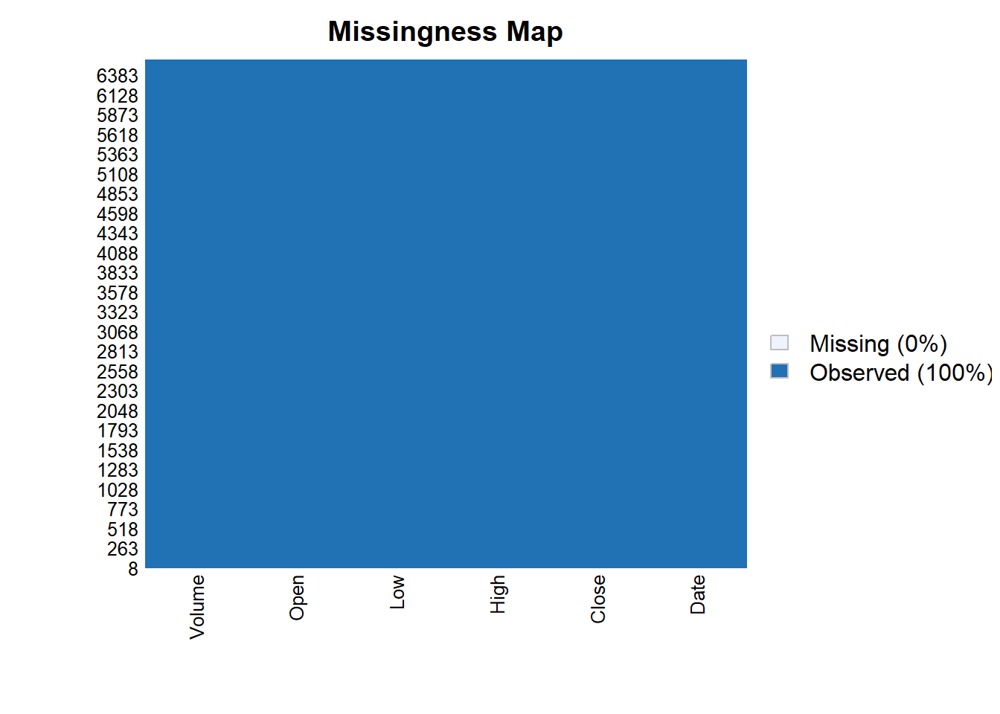
En este caso no se encuentran valores faltantes dentro del dataset, por lo cual se puede continuar sin problemas con el análisis.Una vez comprobado todo esto, hay que pasar a la construcción del retorno y la volatibilidad dentro del dataset, el retorno mide a variación porcentual del precio de un activo entre dos períodos consecutivos, para este análisis, se utilizará la fórmula del retorno logarítmico, usualmente empleada en campos financieros:
\[ r_t = \ln\left(\frac{P_t}{P_{t-1}}\right) \] Donde \(P_t\) es el precio de cierre (Close) en el día \(t\). Por consiguiente, empleando esta fórmula, se añadirá una nueva columna al dataset que contenga esta variable para cada día, exceptuando el primero:
#Calculo del retorno logaritmico
MSFT$Return <- log(MSFT$Close / lag(MSFT$Close))
#Visualizacion del cambio en el dataset
head(MSFT, 10)## Date Close High Low Open Volume Return
## 1 2000-01-03 35.52039 36.14890 34.13004 35.76798 53228400 NA
## 2 2000-01-04 34.32050 35.69180 34.20623 34.60619 54119000 -0.034363840
## 3 2000-01-05 34.68235 35.46322 33.33010 33.86338 64059600 0.010487869
## 4 2000-01-06 33.52058 34.70141 33.02539 34.18718 54976600 -0.034071333
## 5 2000-01-07 33.95862 34.20622 32.70160 33.10156 62013600 0.012983309
## 6 2000-01-10 34.20622 34.64427 33.93958 34.56809 44963600 0.007264679
## 7 2000-01-11 33.33012 34.81569 33.12061 33.97767 46743600 -0.025946081
## 8 2000-01-12 32.24451 33.17775 31.82550 33.06348 66532400 -0.033113683
## 9 2000-01-13 32.85398 33.10157 30.93035 31.80646 83144000 0.018725111
## 10 2000-01-14 34.20622 34.72045 32.22546 32.66351 73416400 0.040334652El retorno diario ya se encuentra calculado para el dataset, excepto para la primera fecha, ya que no hay un día anterior a este. Luego está el cáclulo de la volatibilidad histórica, esta se define como la desviación estándar de los retornos y constituye una medida estadística del riesgo del activo, que mide el grado de variabilidad o dispersión de los retornos de un activo en el tiempo, una mayor volatilidad implica mayor incertidumbre y variabilidad en los rendimientos. Para este caso, se trabajará la volatibilidad historica sobre distintas ventanas móviles en lugar de un solo periodo de tiempo, para eso se utilizará el \(Rolling\) \(Standard\) \(Deviation\), que es la volatibilidad (Desviación estandar), calculada sobre una ventana móvil de tamaño fijo:
\[ \sigma = \sqrt{\frac{1}{n-1} \sum_{t=1}^{n} (r_t - \bar{r})^2} \] Donde:
- \(r_t\) es el retorno en el periodo \(t\).
- \(\bar{r}\) es el retorno medio.
- \(n\) es el número de observaciones por ventana.
Es importante mencionar, que estas variables deben ser analizadas en distintas ventanas de tiempo, para obtener una comprensión más clara sobre el comportamiento de estas variables en distintos periodos. Una vez establecido esto, se puede proceder al análisis de las variables.
1.3 Análisis de variables
1.3.1 Close
Empezaremos con el análisis sobre la variable Close:
## Min. 1st Qu. Median Mean 3rd Qu. Max.
## 11.11 18.99 25.98 101.01 129.12 539.83## [1] 110.1356## [1] 132.5593Se observa que el precio de cierrre presenta un valor mínimo hístorico 11.11 USD y un Máximo de 539.83 USD, junto con una desviación estandar bastante elevada, esto representa un primer indicio de un crecimiento sustancial a lo largo del periodo analizado. Otra evidencia de esto es que el precio de cierre medio (101.01) se encuentra bastante alejado de la mediana (25.98), lo que sugiere una distribución asimétrica positiva, consistente con la tendencia creciente en el largo plazo. Por último, el rango intercuartílico (132.56) indica que el 50% central de los precios se concentra en un intervalo relativamente amplio, reflejando variaciones significativas en los niveles de cotización a lo largo del tiempo.
Antes de pasar a la visualización, es necesario explorar dos variables más que se construyen a partir del precio de cierre (Close), se trata del retorno y la volatibilidad, ya que estás son mucho más representativas a la hora de medir rentabilidad y riesgo real.
Ahora para visualizar el comportamiento de la variable a lo largo de los años en una frecuencia diaria, se observa lo siguiente:
ggplot(MSFT, aes(x = Date, y = Close)) +
geom_line(color = "steelblue", linewidth = 0.5) +
scale_x_date(date_breaks = "4 year", date_labels = "%Y") +
labs(
title = "Precio de cierre diario (USD) - Microsoft",
x = "Año",
y = "Precio de cierre (USD)"
) +
theme_minimal()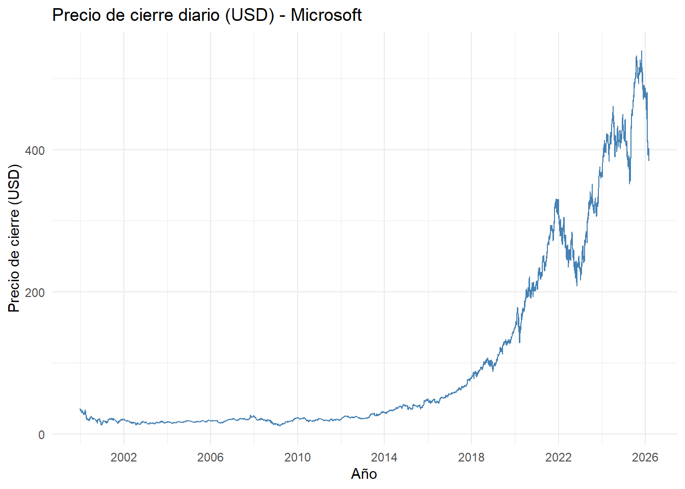
Como se había considerado anteriormente, se puede observar un movimiento ascendente, mostrando una tendencia general causada por el aumento de los precios de las acciones de Microsoft durante los últimos años, marcado desde 2013-2014, se ha dado un crecimiento acelerado en el valor. También se observan episodios de caídas significativas y correcciones temporales, como en periodos de alta incertidumbre del mercado, lo que evidencia que, aunque la tendencia general es alcista, el activo experimenta fases de alta volatilidad.Durante los primeros años (2000–2010), el precio se mantiene relativamente estable, con fluctuaciones moderadas y sin una tendencia pronunciada. Posteriormente, se identifica un cambio estructural en la dinámica del activo, caracterizado por un crecimiento acelerado que lleva el precio desde niveles cercanos a 30–40 USD hasta superar los 500 USD en años recientes.
Desde el punto de vista estadístico, la serie en niveles no parece estacionaria, ya que presenta una tendencia clara y cambios en la varianza a lo largo del tiempo. Esto justifica la necesidad de trabajar con retornos en lugar de precios para el análisis de volatilidad.
1.3.2 Retornos
Ahora pasemos con el análisis estadistico del retorno diario:
## Min. 1st Qu. Median Mean 3rd Qu. Max. NA's
## -0.1695765 -0.0080856 0.0003792 0.0003656 0.0092829 0.1786917 1El promedio de retornos diario 0.0003656 y la mediana 0.0003792 indican que el activo tiene un retorno promedio positivo, es decir, se genera un porcentaje de ganancia, además de esto, la cerccanía de la media y la mediana indican una distribución bastante centrada, esto se analizará más a fondo empleando un histograma para el retorno. El rango intercuartílico indica que la mayoría de las variaciones diarias se concentran en torno a ±1%, lo que refleja un comportamiento relativamente estable en condiciones normales de mercado. Sin embargo, los valores extremos muestran la existencia de movimientos diarios superiores al 15% en magnitud, evidenciando episodios de alta volatilidad, momentos como la pandemia causada por el COVID-19 durante los años 2020 a 2022, y la posible presencia de colas pesadas en la distribución.
Para la visualización, realizaremos un gráfico de linea para los retornos y un histograma de los retornos diarios:
ggplot(MSFT, aes(x = Date, y = Return)) +
geom_line(color = "steelblue", linewidth = 0.5, na.rm = TRUE) +
scale_x_date(date_breaks = "4 year", date_labels = "%Y") +
labs(
title = "Precio de cierre diario (USD) - Microsoft",
x = "Año",
y = "Precio de cierre (USD)"
) +
theme_minimal()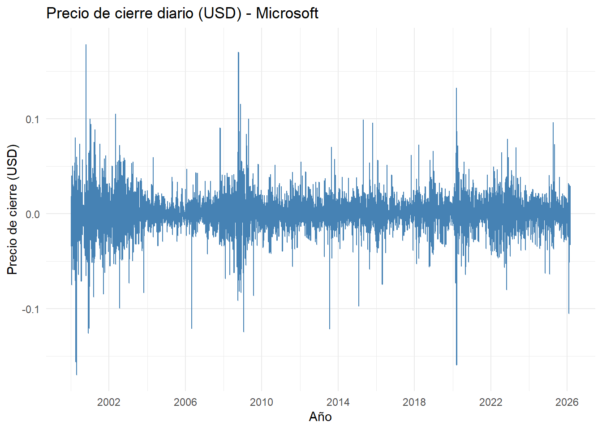
Dentro del gráfico de línea se puede observar el comportamiento de los retornos a lo largo de los años haciendo mucho más fácil el seguimiento. Estos valores oscilan alrededor de 0 a lo largo de los años, exceptuando picos tanto positivos como negativos, por tanto se puede ver que no hay una tendencia clara en los retornos ni un patrón consistente. Se pueden notar algunos periodos donde se encuentran grandes picos consecutivos indicando eventos extremos que afectaron el valor de los retornos, se pueden ver en un periodo entre 2000 a 2002, otro de 2008 a 2009 aproximadamente, y uno más entre 2019 y 2020, por tanto se tendrán en cuenta durante el analisis de la volatibilidad.
media_ret <- mean(MSFT$Return, na.rm = TRUE)
sd_ret <- sd(MSFT$Return, na.rm = TRUE)
ggplot(MSFT, aes(x = Return)) +
#Histograma
geom_histogram(aes(y = ..density.., fill = "Retornos"),
bins = 50,
alpha = 0.6,
color = "black",
na.rm = TRUE) +
#Curva normal
stat_function(aes(color = "Normal teórica"),
fun = dnorm,
args = list(mean = media_ret,
sd = sd_ret),
linewidth = 1) +
scale_fill_manual(values = c("Retornos" = "steelblue")) +
scale_color_manual(values = c("Normal teórica" = "red")) +
labs(title = "Histograma de Retornos Diarios",
x = "Retorno",
y = "Densidad",
fill = "",
color = "") +
theme_minimal()## Warning: The dot-dot notation (`..density..`) was deprecated in ggplot2 3.4.0.
## ℹ Please use `after_stat(density)` instead.
## This warning is displayed once every 8 hours.
## Call `lifecycle::last_lifecycle_warnings()` to see where this warning was
## generated.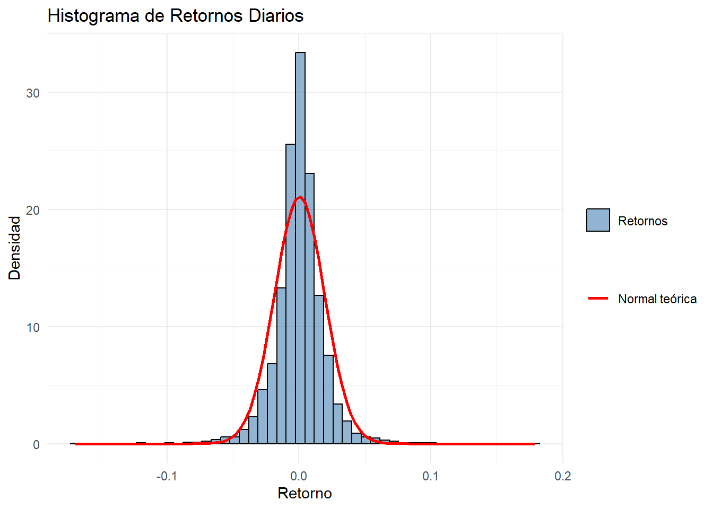
El histograma de los retornos diarios muestra una distribución aproximadamente simétrica y centrada en cero. La mayor parte de los retornos se concentra en torno a valores pequeños, lo cual es consistente con la dinámica típica de mercados financieros. No obstante, la comparación con la distribución normal evidencia colas más pesadas, lo que sugiere la presencia de leptocurtosis y una mayor probabilidad de eventos extremos en relación con la distribución normal teórica.
Para confirmar la leptocurtosis se realizará rapidamente una prueba de kurtosis:
## [1] 12.36415Este resultado confirma la leptocurtosis, indicando colas pesadas.
1.3.3 Volatibilidad Historica (Empleando Rolling STD)
Para el estudio de la volatibilidad utilizando Rolling STD, se trabajará con 3 ventanas de tiempo distintas, una ventana de 20 días búrsatiles para la volatibilidad mensual, una ventana de 60 días búrsatiles para la voltabilidad trimestral y 252 días búrsatiles para la variabilidad anual. Para realizar este cálculo se hará uso de la librería zoo:
#Volatibilidad mensual (20 días)
MSFT$vol_20 <- rollapply(
MSFT$Return,
width = 20,
FUN = sd,
fill = NA,
align = "right"
)
ggplot(MSFT, aes(x = Date, y = vol_20)) +
geom_line(na.rm = TRUE) +
labs(title = "Volatilidad Móvil (Ventana de 20 días)",
x = "Fecha",
y = "Volatilidad") +
theme_minimal()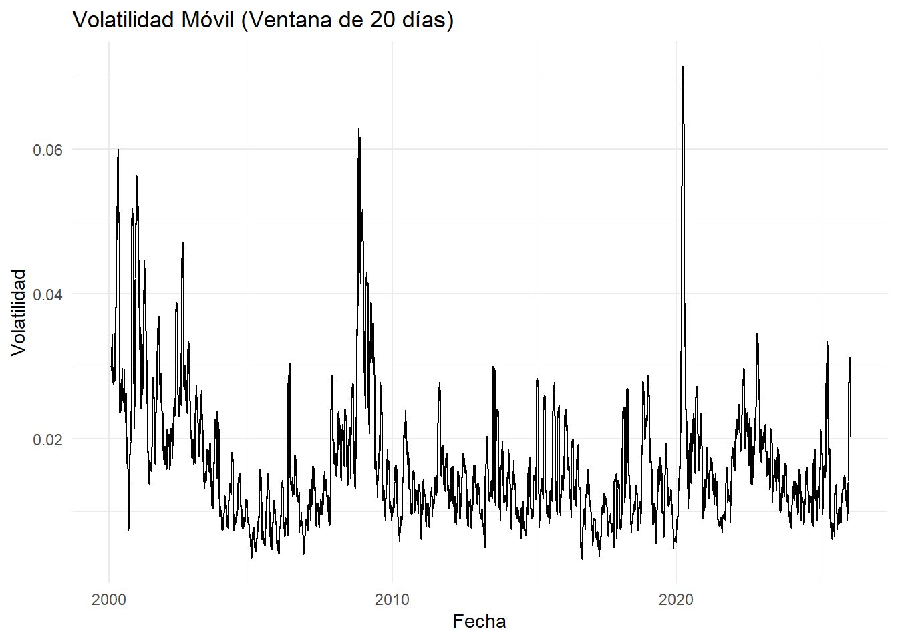
#Volatibilidad trimestral (60 días)
MSFT$vol_60 <- rollapply(
MSFT$Return,
width = 60,
FUN = sd,
fill = NA,
align = "right"
)
ggplot(MSFT, aes(x = Date, y = vol_60)) +
geom_line(na.rm = TRUE) +
labs(title = "Volatilidad Móvil (Ventana de 60 días)",
x = "Fecha",
y = "Volatilidad") +
theme_minimal()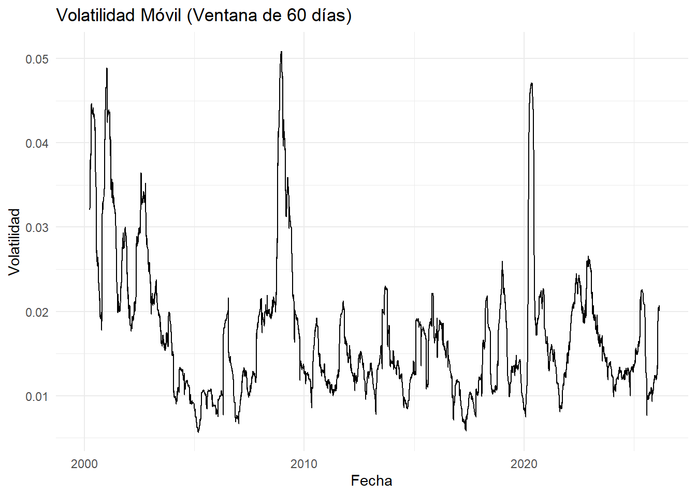
#Volatibilidad anual (252 días)
MSFT$vol_252 <- rollapply(
MSFT$Return,
width = 252,
FUN = sd,
fill = NA,
align = "right"
)
ggplot(MSFT, aes(x = Date, y = vol_252)) +
geom_line(na.rm = TRUE) +
labs(title = "Volatilidad Móvil (Ventana de 252 días)",
x = "Fecha",
y = "Volatilidad") +
theme_minimal()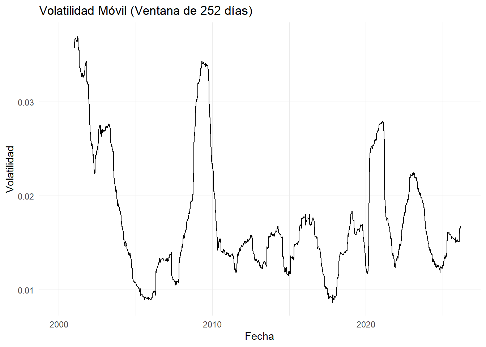
#Comparativo de las 3 volatibilidades
ggplot(MSFT, aes(x = Date)) +
geom_line(aes(y = vol_20, color = "20 días") ,na.rm = TRUE) +
geom_line(aes(y = vol_60, color = "60 días"), na.rm = TRUE) +
geom_line(aes(y = vol_252, color = "252 días"), na.rm = TRUE) +
labs(title = "Comparación de Volatilidades Móviles",
x = "Fecha",
y = "Volatilidad",
color = "Ventana") +
theme_minimal()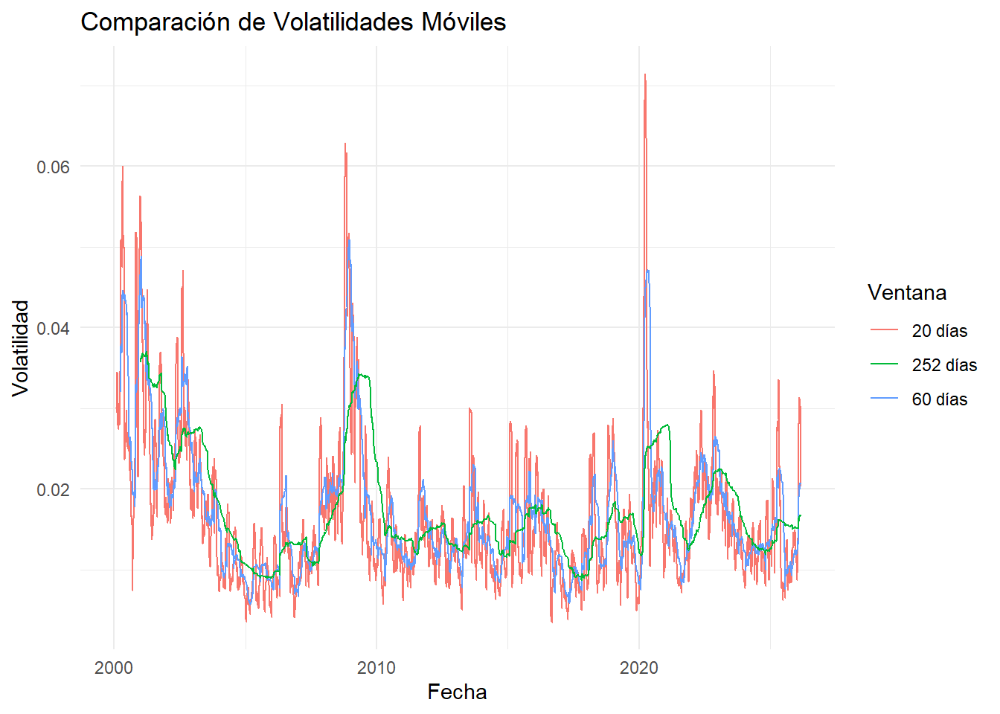
La volatilidad móvil permite observar la evolución temporal del riesgo del activo. Se evidencia la presencia de períodos de alta volatilidad concentrados en eventos específicos del mercado, seguidos de fases de menor variabilidad, lo que confirma la existencia de clustering de volatilidad, característica típica de series financieras. Se puede notar clustering de volatibilidad en periodos resaltados anteriormente, se observan varios picos de volatibilidad en el 2000, 2008-2009 y 2020. La ventana de volatibilidad mensual y trimestral registran un pico mucho más marcado en los últimos meses, y se muestran más cambios estructurales en la ventana anual, mostrando claramente la distribución de los momentos de mayor volatibilidad.
##Análisis de componentes e identificación de patrones
Es momento de dividir la serie en componentes para analizar tendencia, estacionalidad residuales, este proceso se hará sobre el precio de cierre utiilizando la tecnica STL (Seasonal-Trend), se hará con una frecuencia de 252 días, ya que se trabajará anualmente:
#Crear objeto ts
close_ts <- ts(MSFT$Close,
start = c(as.numeric(format(min(MSFT$Date), "%Y")), 1),
frequency = 252)
#Aplicar STL al objeto creado
close_stl <- stl(close_ts, s.window = "periodic")
#Graficar
plot(close_stl)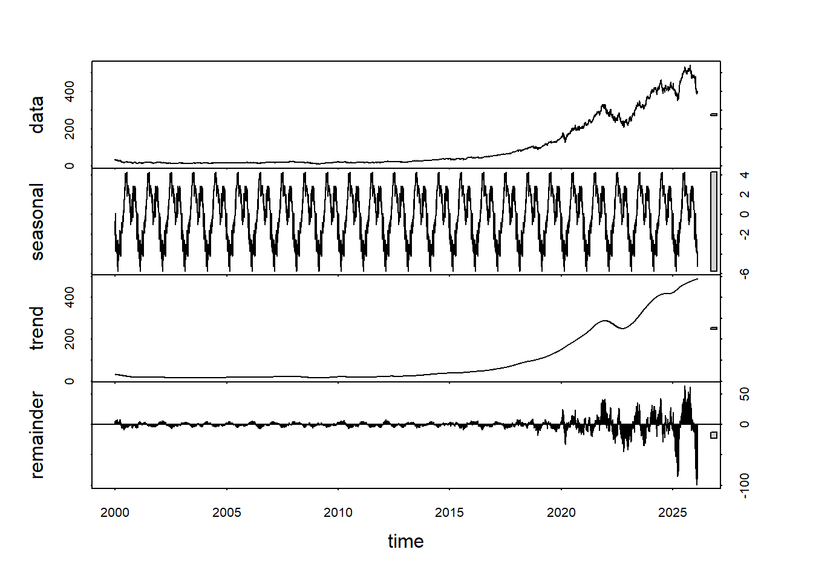
#Se divide en componentes individuales para poder graficar individualmente
trend_comp <- close_stl$time.series[, "trend"]
seasonal_comp <- close_stl$time.series[, "seasonal"]
residual_comp <- close_stl$time.series[, "remainder"]
observed_comp <- close_ts
stl_df <- data.frame(
Date = MSFT$Date,
Original = as.numeric(observed_comp),
Tendencia = trend_comp,
Estacionalidad = seasonal_comp,
Residual = residual_comp
)
#Linea original
ggplot(stl_df, aes(x = Date, y = Original)) +
geom_line(color = "steelblue", linewidth = 0.8) +
labs(title = "Serie Original — Precio de cierre (MSFT)",
x = "Fecha",
y = "Precio") +
theme_minimal()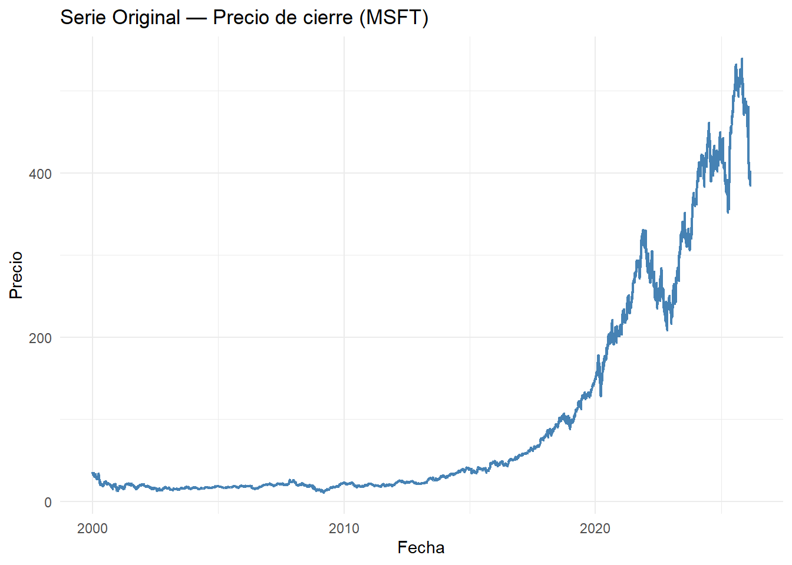
#Tendencia
ggplot(stl_df, aes(x = Date, y = Tendencia)) +
geom_line(color = "seagreen", linewidth = 0.8) +
labs(title = "Componente Tendencia",
x = "Fecha",
y = "Tendencia") +
theme_minimal()## Don't know how to automatically pick scale for object of type <ts>. Defaulting
## to continuous.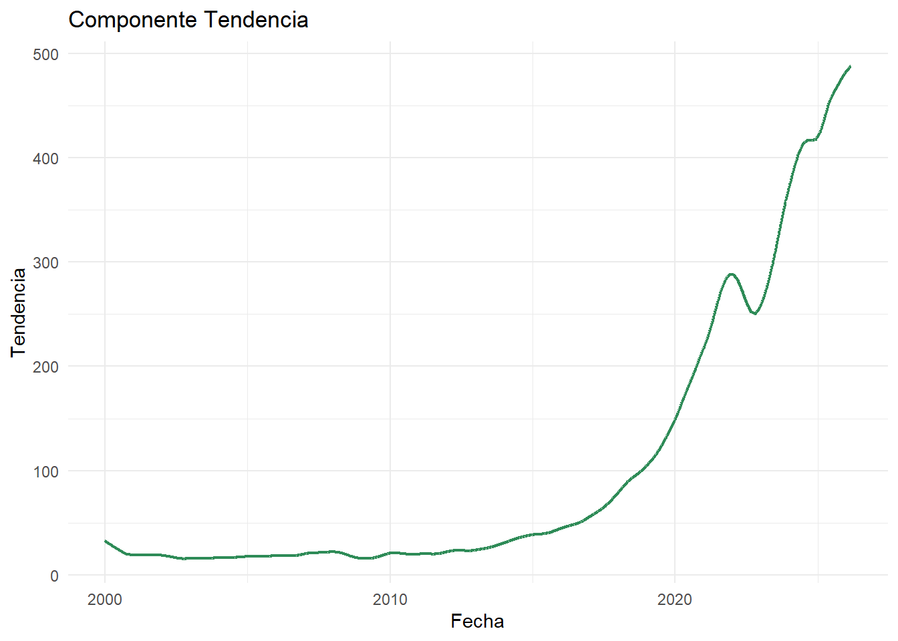
#Estacionalidad
ggplot(stl_df, aes(x = Date, y = Estacionalidad)) +
geom_line(color = "darkorange", linewidth = 0.6) +
labs(title = "Componente Estacional",
x = "Fecha",
y = "Estacionalidad") +
theme_minimal()## Don't know how to automatically pick scale for object of type <ts>. Defaulting
## to continuous.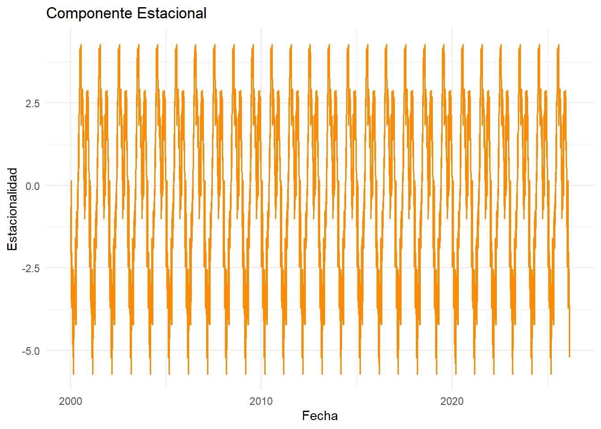
#Residual
ggplot(stl_df, aes(x = Date, y = Residual)) +
geom_line(color = "purple", linewidth = 0.8) +
geom_hline(yintercept = 0, linetype = "dashed") +
labs(title = "Componente Residual",
x = "Fecha",
y = "Residual") +
theme_minimal()## Don't know how to automatically pick scale for object of type <ts>. Defaulting
## to continuous.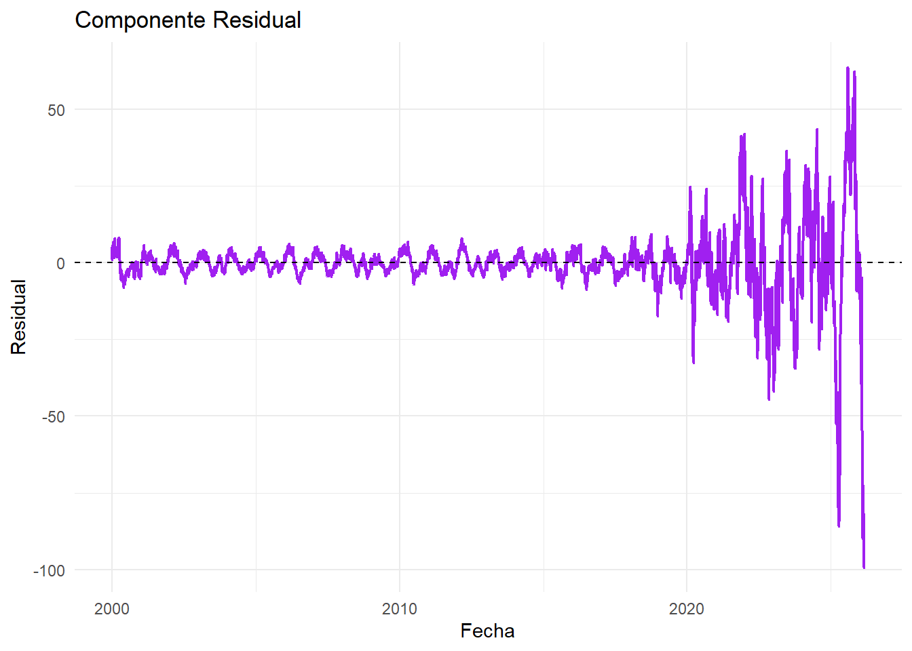
Nuevamente se observa una tendencia claramente creciente de largo plazo, especialmente acelerada a partir de 2013–2015, con fuertes fluctuaciones recientes (mayor volatilidad desde 2020 en adelante). Por otro lado la componente de tendencia captura muy bien el crecimiento estructural del precio. Es suavemente creciente durante la primera década y luego muestra una pendiente mucho más pronunciada en los últimos años. Esto confirma que la serie de precios no es estacionaria, ya que la media cambia en el tiempo.La componente estacional muestra un patrón repetitivo estable en el tiempo, con oscilaciones regulares alrededor de cero. Sin embargo, su magnitud es pequeña en comparación con la tendencia y con los movimientos del precio total. Esto sugiere que existe una estacionalidad estadística (probablemente ligada a efectos calendario o patrones anuales), pero su impacto económico es limitado frente a la tendencia dominante. El componente irregular presenta mayor dispersión en los años recientes, lo que evidencia clustering de volatilidad. Los shocks son más grandes después de 2020.
## Warning: package 'forecast' was built under R version 4.5.2library(ggplot2)
close <- MSFT$Close
ggAcf(close, lag.max = 60) +
ggtitle("Autocorrelación (ACF) — MSFT Precio de Cierre")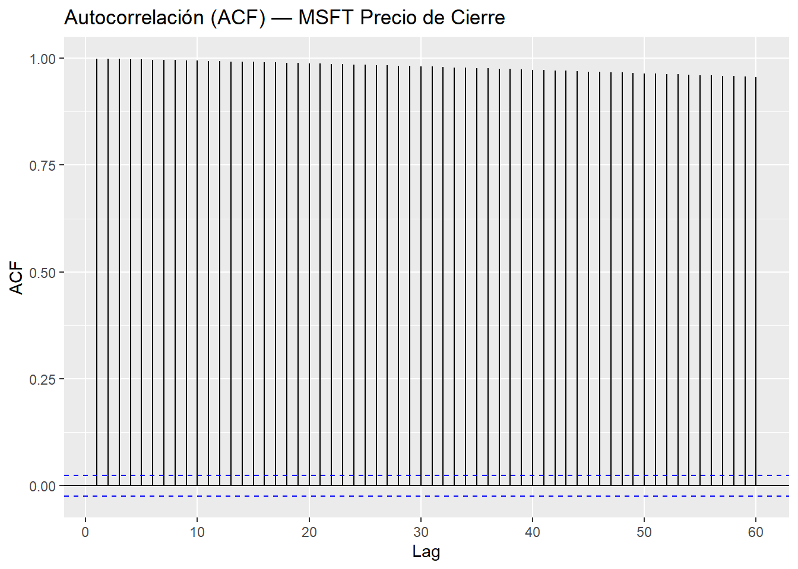
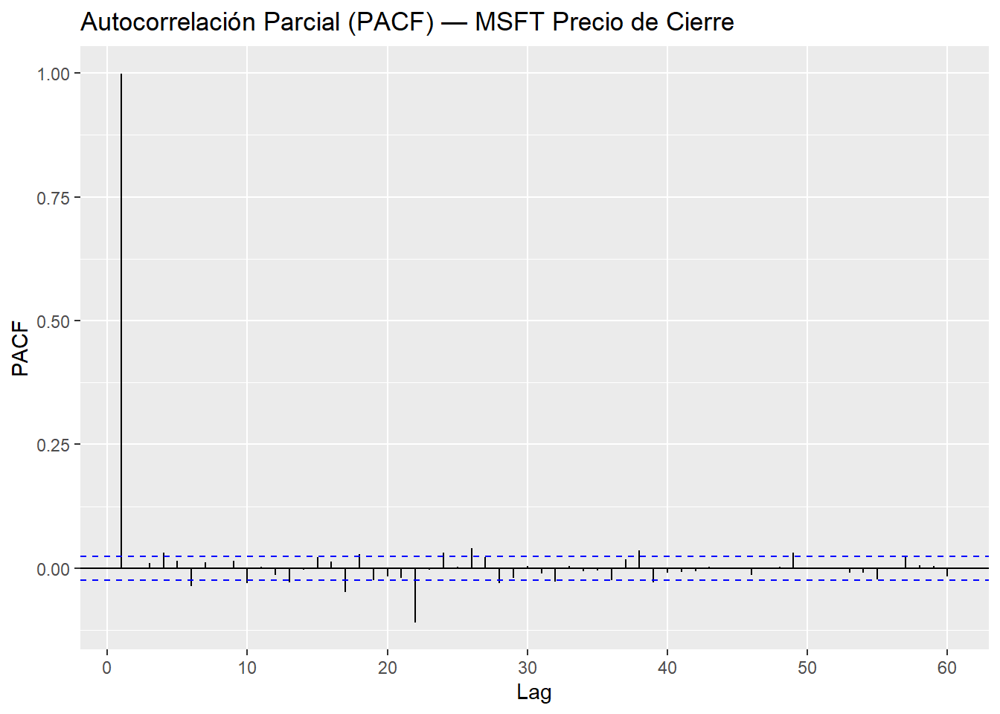
Debido a que se puede observar que la serie presenta autocorrelaciones muy cercanas a 1, y se puede observar que el ACF decae lentamente, esto nos indica que la serie no es estacionaria, existiendo una tendencia fuerte a largo plazo, esto se apoya también en que existe un pico enorme en el rezago y el resto de rezagos son cercanos a 0.
returns <- MSFT$Return
ggAcf(returns, lag.max = 60) +
ggtitle("Autocorrelación (ACF) — MSFT Retornos diarios")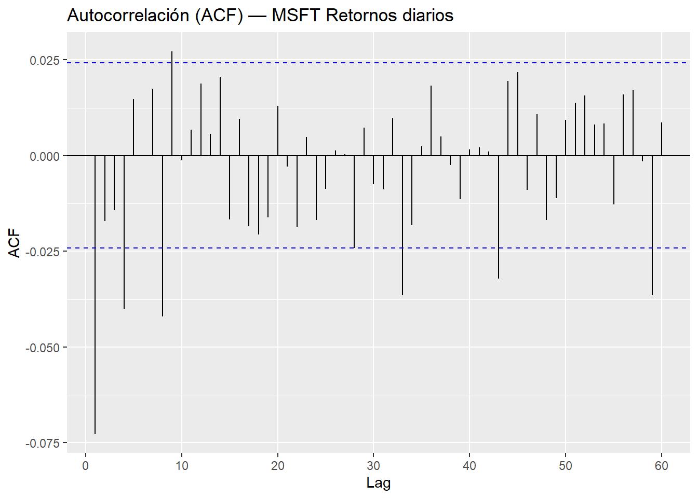
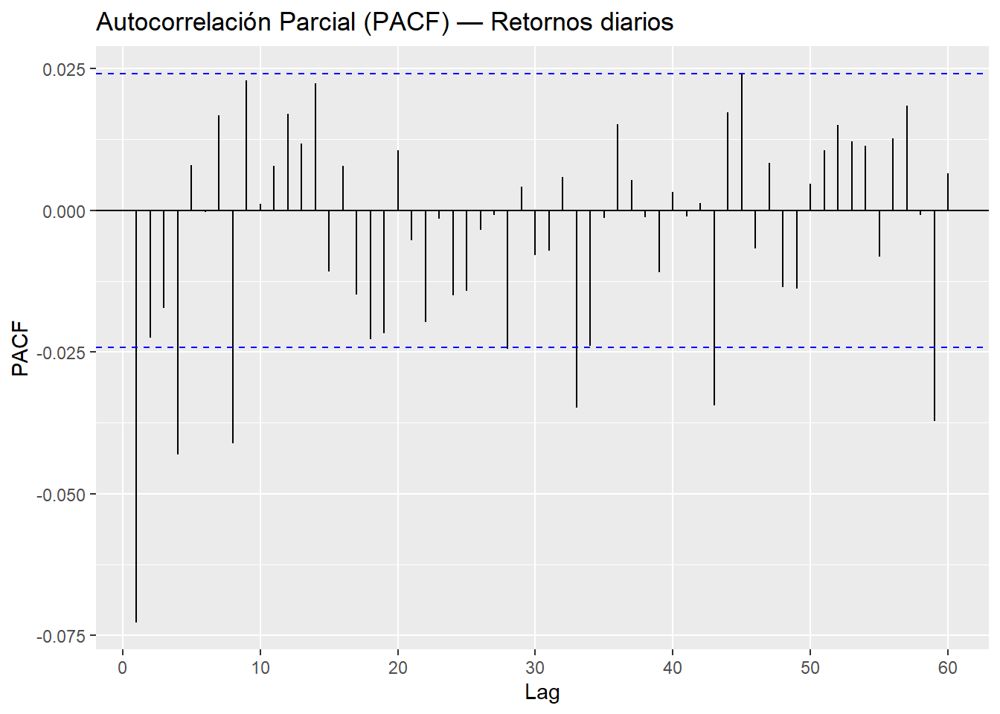
El análisis de la función de autocorrelación (ACF) y la función de autocorrelación parcial (PACF) de los retornos diarios muestra que la mayoría de los coeficientes se encuentran muy cercanos a cero y dentro de las bandas de confianza, sin evidenciar un patrón sistemático ni un decaimiento progresivo en los rezagos. Aunque se observan algunos picos aislados, estos son pequeños y no sugieren una estructura autoregresiva clara. En conjunto, los resultados indican ausencia de dependencia lineal significativa en la media, consistente con un comportamiento cercano al ruido blanco y alineado con la Hipótesis de Mercado Eficiente en su forma débil, es decir, los retornos pasados no predicen bien a los futuros.